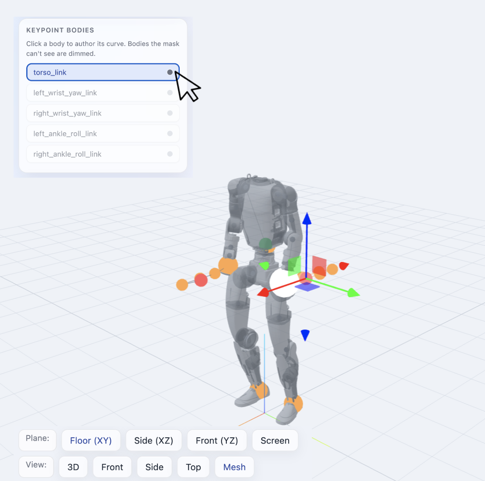

AnyBody: Free-Form Whole-Body Humanoid Control from Arbitrary Keypoint Guidance
Abstract
We present AnyBody, a unified whole-body humanoid controller driven by an arbitrary subset of body keypoints chosen at deploy time. Prior physics-based trackers either rely on expensive full-body motion capture and error-prone trajectory retargeting, which bottleneck scalable data collection and policy learning, or decompose upper- and lower-body control into separate hierarchical representations, sacrificing the coordinated whole-body motions that loco-manipulation requires.
We close this gap by learning a single latent motion representation that any keypoint subset can address. To achieve this, we first train a privileged teacher tracker on a large unstructured motion corpus and distill it online into a deterministic encoder–decoder student whose latent space is a unit sphere. We then train a transformer keypoint encoder that admits any subset of body keypoints through masked self-attention, aligning it to the privileged latent. Additionally, we treat the frozen decoder as a motor prior and specialize downstream tasks with a lightweight residual corrector in the latent space. We demonstrate the effectiveness of AnyBody by tracking large-scale human motions from arbitrary keypoint subsets, free-form control, flexibly teleoperating, and learning downstream behaviors including locomotion, in-air writing, and obstacle-reach.
Method

Overview of AnyBody. (a) We first train a privileged teacher tracker on a large-scale motion corpus and distill it into a deterministic encoder–decoder, yielding a compact spherical latent motion representation and a dynamics-aware decoder. (b) With the latent space and decoder frozen, we train a transformer-based keypoint encoder by online latent distillation, aligning arbitrary sparse keypoint observations with the privileged latent and enabling control from varying keypoint subsets. (c) We reuse the frozen decoder as a motor prior and specialize the controller through residual reinforcement learning in the latent space, expanding capability coverage toward downstream tasks such as obstacle reaching, in-air writing, and real-world interactive control.
Arbitrary Keypoint Guidance Following
AnyBody tracks motions from different sparse keypoint subsets while preserving coordinated whole-body behavior. Each row fixes a keypoint mask; each column is the same motion clip tracked under that mask. Scroll horizontally to browse all clips. Red dots indicate the keypoints to track.
Interactive Viewer
A lightweight interface for designing sparse keypoint trajectories and testing interactive motion control.

Speed-commanded Locomotion
Latent-space adaptation enables commanded locomotion across walking directions and speeds.
0° · 1.0 m/s
90° · 1.0 m/s
180° · 1.0 m/s
270° · 1.0 m/s
45° · 0.6 m/s
135° · 0.6 m/s
225° · 0.6 m/s
315° · 0.6 m/s
Wrist Writing
The humanoid traces in-air polylines with its right wrist to spell words at varying scales and torso-relative locations, coordinating locomotion and upper-body motion when needed.
AI
Anybody
Dance
Embodied
Humanoid
Learning
Magic
Wow
Obstacle Reach
The humanoid moves its right wrist to a fixed target while avoiding obstacles that block the direct path, requiring task-aware whole-body strategies such as bending, leaning, and squatting. Comparing with and without reward guidance.
w/o guidance
w/ reward guidance
w/o guidance
w/ reward guidance
w/o guidance
w/ reward guidance
BibTeX
@article{anybody2026,
title={AnyBody: Free-Form Whole-Body Humanoid Control from Arbitrary Keypoint Guidance},
author={Anonymous Authors},
year={2026}
}